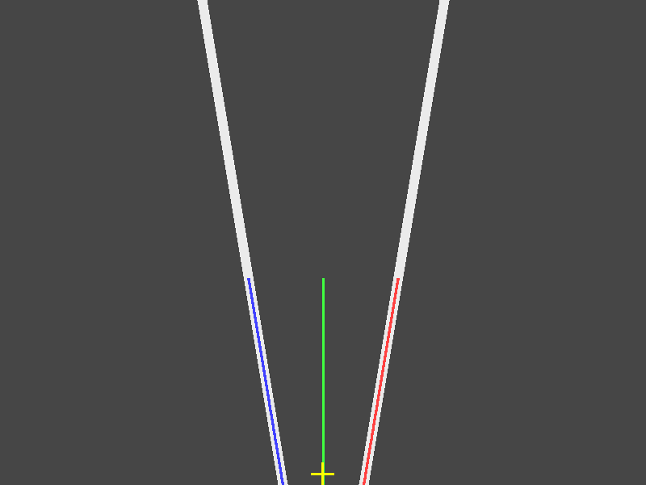
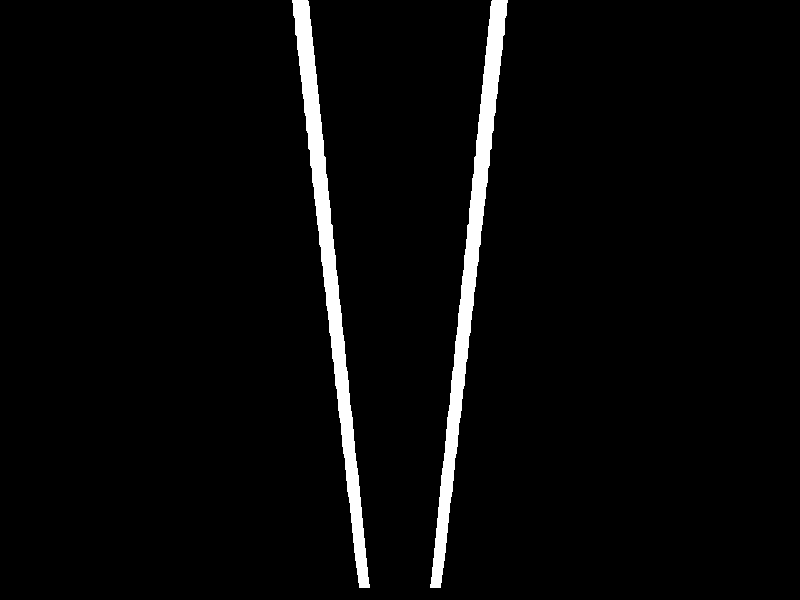
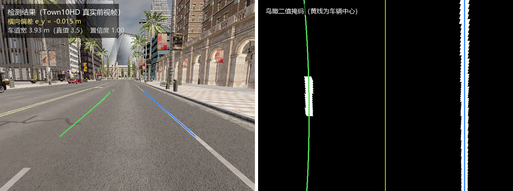

基于前视视觉的车道线检测（carla_lane_keeping）
本模块在 CARLA 仿真环境中，用前视相机图像检测车道线，输出车辆相对车道中心的 横向偏差、航向偏差与车道曲率。全部算法用纯 numpy 实现，不依赖 OpenCV、 不依赖深度学习，可在教学虚拟机的 ROS Noetic 环境中直接运行。
配套的车道保持控制见车道保持控制。
1. 为什么做这个模块
仓库中地面载具部分的视觉模块已有 carla_yolo_avoidance、yolov8_target_tracking、
carla_pilotnet_ros、carla_perception_control、carla_traffic_sign_recognition，
但它们的输出都是目标框、端到端转向量或交通标志类别——回答的是"前方有什么物体"。
显式的车道几何恢复是缺的：没有模块输出车辆相对车道中心的横向偏差、航向偏差 与车道曲率。已有视觉模块偏目标检测与端到端学习，缺的是把车道线本身当作几何结构 来拟合的那一层。
车道保持是自动驾驶最基础、也最能体现"感知 → 决策 → 控制"闭环的能力： 它必须先从图像中恢复出车道几何，再据此算出车辆偏离了多少，才能谈控制。 本模块负责前者，并输出下游可直接消费的物理量。
2. 处理流程
彩色图 (BGR)
│
├─ 灰度化
│
├─ 方向梯度阈值 ──┐
│ ├─► 二值车道像素掩码
└─ 颜色阈值 ──────┘
│
├─ 透视变换（梯形 → 矩形，得到鸟瞰图）
│
├─ 底部直方图定位车道线起点
│
├─ 连通域分组 + 多项式拟合
│
└─ 输出：左右车道线系数
├─► 横向偏差（米）
├─► 航向偏差（弧度）
└─► 车道曲率半径（米）
2.1 方向梯度阈值
车道线在图像中近似竖直。对图像求 Sobel 梯度后，定义梯度方向角
angle = atan2(|gy|, |gx|)
这里有一个极易搞反的点：
- 竖直边缘（车道线）的梯度几乎全在水平方向，
|gy| ≈ 0，因此角度 接近 0° - 水平边缘（路面接缝、阴影边界）角度接近 90°
所以判据是保留 angle <= angle_max_deg，而不是相反。若按 90° 写判据，
整幅图会被过滤干净、一个车道像素都检不到。
梯度幅值阈值采用自适应策略：
实际阈值 = max(sobel_min, 该图像梯度分布的 sobel_auto_percentile 分位)
原因很实际：实测 CARLA 前视相机的路面纹理梯度中位数约 45、90 分位约 260， 而合成图像背景梯度几乎为 0。用同一个固定阈值处理两类图像必然顾此失彼—— 取 25 会在真实图上把 40% 的路面判成车道线（整块路面连成一个巨大连通域）， 取 160 又会让低噪声图像几乎没有输出。按分位数自适应可以兼顾。
在真实 CARLA 图像上的实测效果：
| 阈值策略 | 二值掩码占比 | 最大连通域 |
|---|---|---|
| 固定 25（未标定） | 42% | 271205 像素（整块路面） |
| 自适应（本模块） | 1.6% ~ 4% | 细长结构，宽高比 < 0.1 |
2.2 透视变换
用直接线性变换（DLT）自行求解单应矩阵，不依赖 OpenCV：
源梯形（图像中感兴趣的地面区域） → 目标矩形（鸟瞰图）
两个容易踩的坑，本模块都已处理：
-
源梯形底边必须贴到图像最底行（
bottom_ratio = 1.0）。 横向偏差是相对"离车最近处"定义的；若底边抬高到 0.95h，算出来的其实是 约 3 m 前方的偏差，会引入与距离成正比的系统性误差（实测偏右 100 px 的场景误差达 35 px）。 -
目标矩形上下必须留边距。源梯形底边在图像底部，透视外推后该行以下的 近处像素会映射到目标图之外；若目标矩形下边直接顶到
height-1， 这些像素全部落在图像外被丢弃，导致近处车道（尤其偏在一侧的）整条消失。
2.3 车道线拟合：为什么用连通域而不是滑动窗口
绝大多数车道线检测教程用滑动窗口。本模块最初也用，但在测试中发现了 它的一个固有缺陷：
滑动窗口要求「窗口宽度 > 单条车道线宽度」且「窗口宽度 < 两条车道线间距」。
这两个条件很容易同时不成立。实测：窗口取 ±100 px 时宽达 200 px， 而两条车道线在鸟瞰图中的间距可能只有约 91 px——每个窗口都同时框住两条线， 取均值后两条线都被拟合到画面正中，输出完全错误却不报任何错。
因此本模块改用连通域分组：鸟瞰图中每条车道线是一个细长连通域， 先做连通域标记，再按基点列把左右两侧分别取出、各自拟合多项式。 这样不存在尺度矛盾，且天然把两条线分开。
为防误检，还加了几何约束。这里有一个关键的设计选择：
判据用的是填充率（连通域像素数 / 其包围盒面积），而不是包围盒宽度。 原因是车道线在鸟瞰图中常常是倾斜的（车辆偏离车道中心、或相机存在偏航时）， 此时它的包围盒会很宽——实测一条完全正常的倾斜车道线，包围盒宽度达 114 px， 但填充率只有 0.27。若按「包围盒宽度 < 90 px」判断，这条真实车道线会被整条 拒绝，导致车辆偏右场景下的横向偏差误差达 25 px。
填充率则对竖直与倾斜车道线都成立：车道线很细，填充率必然低；而被误阈值化的 路面是面状结构，包围盒内几乎被填满，填充率很高。此外还限制包围盒宽度、 总面积与纵向长度，共同排除零碎小块与整块路面。
若连通域因虚线车道线或局部遮挡而断裂，会自动退回滑动窗口作为兜底。
2.4 几何量解算
设左右车道线在求值行上的列坐标为 u_l、u_r，则
车道中心 u_center = (u_l + u_r) / 2
横向偏差 lateral = (u_vehicle - u_center) * meters_per_pixel_x
其中 u_vehicle 取鸟瞰图水平中心（相机装在车辆中心、光轴朝前时，
图像横向中心对应车辆前进方向）。正值表示车辆偏在车道中心右侧。
航向偏差由车道中心线在求值行的斜率换算；曲率半径由一阶、二阶导数给出：
R = (1 + (dx/dy)^2)^(3/2) / |d²x/dy²| （直道为无穷大）
求值行必须选在有车道像素的行上。 目标矩形底边略高于图像底行，若固定用
height-1求值，会在没有任何数据的 行上外推多项式，横向偏差出现十几到几十像素的系统误差。本模块从掩码 统计出实际有像素的最底行再求值。
3. 环境准备
3.1 依赖
| 依赖 | 版本要求 | 说明 |
|---|---|---|
| ROS Noetic | — | 虚拟机镜像内已提供 |
| Python | 3.8（ROS Noetic 自带） | 算法本身兼容 3.8 ~ 3.12 |
| numpy | ≥ 1.18 | 唯一的算法依赖 |
| CARLA | 0.9.13（与 carla_ros_bridge 一致） |
仅"实车运行"需要 |
| OpenCV | — | 不需要（算法为纯 numpy 实现） |
| 深度学习框架 | — | 不需要 |
3.2 已验证环境
本模块在以下环境完成过实际运行与测试。请按行对应——不同项目的验证环境不同， 不要跨行推断：
| 验证项目 | 操作系统 | Python | 依赖 |
|---|---|---|---|
| 118 个单元测试 | Windows 11 | 3.8.10（numpy 1.24.4） | numpy |
| 118 个单元测试 | Windows 11 | 3.12.8（numpy 2.5.3） | numpy |
| 84 个单元测试（标定用例加入前） | Ubuntu 20.04（ROS Noetic 教学镜像） | 3.8.10 | numpy |
demo_lane_detection.py 演示 |
Ubuntu 20.04 | 3.8.10 | numpy |
demo_lane_detection.py 演示 |
Windows 11 | 3.12.8 | numpy |
mkdocs serve --livereload 网页验证 |
Ubuntu 20.04 | 3.8.10 | 见 3.5 节 |
| 真实 CARLA 图像验证 | Windows 11 | 3.12.8 | numpy + carla 0.9.16 |
需要说明的三点：
- 单元测试在 Python 3.8.10 与 3.12.8 上都跑通了，结果一致
（均为
Ran 118 tests ... OK）。其中 3.8.10 正是 Ubuntu 20.04 的默认版本， 因此教学虚拟机上的兼容性有直接参照；但测试本身是在 Windows 上跑的， 没有在 Linux 上重跑。 - Ubuntu 侧跑过的是标定相关用例加入之前的 84 个测试；之后新增的用例 （相机模型、地面矩形、车道宽配对、航向符号、稳健重拟合、参数加载， 以及本轮补充的 8 个配置接线用例）只在 Windows 上验证过。
- 真实 CARLA 图像验证只在 Windows 上做过（Python 3.12.8 + carla 0.9.16）。 教学虚拟机侧没有做这项验证，原因是 CARLA 版本与桥接要求不一致、 且 RPC 只监听本机（详见 3.6 节）。
重要提示：算法与单元测试不依赖 CARLA、不依赖 ROS、不依赖 OpenCV， 因此可以在任何有 Python + numpy 的机器上直接复现（见 3.4 节）。
3.3 编译
# 为避免与教材章节中的同名包冲突，单独建立工作空间
mkdir -p ~/lane_ws/src
ln -s ~/ros2/src/ground/carla_lane_keeping ~/lane_ws/src/
cd ~/lane_ws
catkin_make
source devel/setup.bash
3.4 无需 CARLA / ROS 的验证方式（推荐给评审者）
这是最快确认本模块可用的方法，三分钟内可完成，不需要启动任何仿真器：
cd ~/ros2/src/ground/carla_lane_keeping
# 1) 单元测试：118 个测试，覆盖梯度、透视变换、拟合、几何量、ROS 节点、PID、参数接线
python3 -m unittest discover -s tests -v
# 预期结尾: Ran 118 tests ... OK
# 2) 端到端演示：生成合成图像 -> 检测 -> 输出量化指标并保存结果图
python3 tests/demo_lane_detection.py
# 预期: 3/3 个场景检出两侧车道线，最大测量误差 0.70 px（0.035 m）
# 结果图片保存在 demo_out/ 目录
# 3) 查看结果图（蓝=左车道线、红=右车道线、绿=中心线、黄十字=检出中心）
xdg-open demo_out/demo_1.png
numpy 是唯一前置依赖。若提示缺失：
pip3 install --user -i https://pypi.tuna.tsinghua.edu.cn/simple numpy
3.5 文档环境（mkdocs serve）的两处已知问题
若需要在本地预览文档网页，仓库现有的 requirements.txt 在 Python 3.8
环境（ROS Noetic 教学镜像的标配）下会遇到两个问题，这里记录解决办法：
问题一：mkdocs-bibtex 在 Python 3.8 上导入崩溃
现象：
TypeError: 'type' object is not subscriptable
File ".../mkdocs_bibtex/citation.py", line 30, in Citation
def from_markdown(cls, markdown: str) -> list[Citation]:
原因：新版本 mkdocs-bibtex 使用了 list[Citation] 这类内建泛型注解，
它在 Python 3.9+ 才可运行时求值。而 pip 在安装任何包时都会加载插件入口点，
因此这个崩溃会连带影响所有 pip install 操作。
解决办法：给该包的所有源文件加上惰性注解（不改动任何逻辑）：
python3 - <<'PY'
import glob, os, ast
root = os.path.expanduser('~/.local/lib/python3.8/site-packages/mkdocs_bibtex')
for path in glob.glob(os.path.join(root, '**', '*.py'), recursive=True):
src = open(path, encoding='utf-8').read()
if 'from __future__ import annotations' in src:
continue
lines = src.splitlines(keepends=True)
i = 0
while i < len(lines) and (lines[i].startswith('#!') or 'coding' in lines[i][:40]):
i += 1
lines.insert(i, 'from __future__ import annotations\n')
open(path, 'w', encoding='utf-8').write(''.join(lines))
print('已修补', os.path.relpath(path, root))
PY
问题二：mkdocs-mermaid2-plugin 需要 Node.js，但 requirements.txt 未声明
现象：Error: cannot find module 'mermaid2'，装好后变成
ModuleNotFoundError: No module named 'typing_extensions'，
再之后是 Cannot find node executable。
原因：该插件依赖 beautifulsoup4（它又依赖 typing_extensions），
并在渲染时调用外部 node 进程，而 requirements.txt 里没有体现这些依赖。
解决办法：
sudo apt install -y nodejs npm
pip3 install --user -i https://pypi.tuna.tsinghua.edu.cn/simple \
beautifulsoup4 typing_extensions soupsieve
pip3 install --user --no-deps -i https://pypi.tuna.tsinghua.edu.cn/simple \
mkdocs-mermaid2-plugin
建议向仓库反馈：在
requirements.txt中补充 Node.js 说明，并为mkdocs-bibtex固定一个兼容 Python 3.8 的版本（例如mkdocs-bibtex<2.13）。
3.6 实车运行的限制说明
若要与 CARLA 实车联调，需要注意：
- CARLA 版本必须与桥接一致：仓库内
carla_ros_bridge声明要求 CARLA 0.9.13（其CARLA_VERSION文件值为0.9.13， README 亦写明 "This version requires CARLA 0.9.13"）。 使用 0.9.16 会因 API 差异导致连接异常。 - CARLA 的 RPC 默认只监听本机（
127.0.0.1:2000/41451）， 虚拟机不能直接连宿主机的 CARLA。需按 设置并连接到 Carla 模拟器 的方式通过carla_ros_bridge转发图像话题。 - CARLA 0.9.16 在中文 Windows 下偶发字符串导出缺陷：
world.get_map()、client.get_trafficmanager()与车道侵入传感器 可能抛UnicodeDecodeError，导致拿不到标准生成点。 本次实跑（2026-10-29）该接口已恢复正常，可以正常取到 155 个生成点； 若再次遇到，重启 CARLA 服务器通常即恢复，否则改用 0.9.13。
4. 运行
只想快速验证能不能跑？ 请直接看 3.4 节——不需要 CARLA、不需要 ROS， 三分钟内即可复现全部结果。
4.1 前置条件
需要一个正在运行、且有车辆的 CARLA 环境，且能提供前视相机图像。 两种方式任选：
-
方式一（推荐）：先启动 CARLA 与桥接，图像话题为
/carla/ego_vehicle/rgb_front/image参见设置并连接到 Carla 模拟器 -
方式二：用本模块自带的独立采集脚本（不需要 ROS 桥接）， 直接连接 CARLA 的 Python API 抓图并跑检测，适合快速验证算法
该方式依赖版本与桥接一致的 CARLA（0.9.13），限制见 3.6 节。
4.2 启动检测
# 方式一：一键启动（推荐）
roslaunch carla_lane_keeping main.launch
# 如果图像话题不同，用参数覆盖
roslaunch carla_lane_keeping main.launch image_topic:=/camera/image_raw
# 方式二：直接运行入口脚本
rosrun carla_lane_keeping main.py --mode detect
# 方式三：只启动检测节点
rosrun carla_lane_keeping lane_detector.py
4.3 查看结果
# 横向偏差（米，正 = 车辆偏右）
rostopic echo /lane/lateral_offset
# 航向偏差（弧度）
rostopic echo /lane/heading_error
# 是否偏离车道
rostopic echo /lane/departure
# 置信度
rostopic echo /lane/confidence
在 RViz 中可视化鸟瞰掩码：
rosrun rviz rviz
# Add -> Image -> Topic: /lane/mask
还可以用 rqt_image_view 查看实时画面。
5. 话题接口
| 方向 | 话题 | 类型 | 说明 |
|---|---|---|---|
| 订阅 | /carla/ego_vehicle/rgb_front/image |
sensor_msgs/Image |
前视彩色图（bgr8 / rgb8 / bgra8 / rgba8 / mono8 均支持） |
| 发布 | lane/lateral_offset |
std_msgs/Float32 |
横向偏差（米），正 = 车辆偏右 |
| 发布 | lane/heading_error |
std_msgs/Float32 |
航向偏差（弧度） |
| 发布 | lane/curvature |
std_msgs/Float32 |
车道曲率半径（米），直道发 0 |
| 发布 | lane/confidence |
std_msgs/Float32 |
置信度 0~1 |
| 发布 | lane/departure |
std_msgs/Bool |
横向偏差是否超过阈值 |
| 发布 | lane/lane_width |
std_msgs/Float32 |
本帧实测车道宽（米），标定自检用 |
| 发布 | lane/mask |
sensor_msgs/Image |
鸟瞰二值掩码（调试，默认 5 帧发一次） |
lane/lane_width 值得单独说一句：它是相机标定是否正确的直接指标。
这条通路里米/像素完全由相机高度与俯角决定，因此车道宽的测量值应与真实
车道宽（本仓库测试地图为 3.5 m）吻合。在 48 张真实 CARLA 帧（覆盖多个生成点
与扰动过程）上实测均值 3.80 m、中位数 3.87 m、范围 3.07~3.97 m；若它系统性
偏大 20%，说明 camera_height_m 填小了，此时横向偏差也会同比例失真——这比
"看横向偏差像不像"要可靠得多。
未检出时不发布横向偏差。 这一点很重要：如果感知失效时发布 0，下游控制器会误以为"车辆正好居中"而 继续直行，这在真实车辆上是危险的。本模块在未稳定检出时只更新置信度， 由控制器依据置信度与超时来决定停止输出。
6. 参数说明
完整参数见 config/lane_params.yaml，参数名与代码字段一一对应。
几个关键参数的标定方法：
标定模式（传入 CameraModel）下真正需要填的是相机安装参数，
鸟瞰图的「米/像素」由它们算出来，不需要手工量。lane_params.yaml 里
对应的 ROS 参数带 camera_ 前缀，use_calibration: true 时生效：
| ROS 参数 | 代码字段 | 含义 | 怎么得到 |
|---|---|---|---|
use_calibration |
— | 是否启用标定模式 | 真机保持 true；跑合成图可设 false |
camera_height_m |
mount_height_m |
相机光心离地高度 | 卷尺量，默认 1.70 |
camera_pitch_deg |
pitch_deg |
光轴俯角（向下为正） | 量相机安装角，默认 8.0；CARLA 里 pitch=-8 |
camera_hfov_deg |
hfov_deg |
水平视场角 | 相机规格，默认 90.0 |
d_near_m / d_far_m |
同名 | 鸟瞰图覆盖的前向距离区间 | 默认 3.5~15 m，受视场限制（见 7.2 节） |
bev_half_width_m |
同名 | 鸟瞰图横向半宽 | 默认 3.2 m，近端再宽就超出 45° 半视场 |
lane_width_m / lane_width_tol_m |
同名 | 车道宽先验与容差 | 默认 3.5 m ± 0.6 m |
hist_band_m |
同名 | 统计直方图用的距离段 | 默认 [5.0, 13.0]，两端各避噪声 |
max_stale_frames |
同名 | 检出失败时沿用上一帧的最大帧数 | 默认 10（20 Hz 下 0.5 s） |
camera_height_m、camera_pitch_deg 也可以在 launch 里临时覆盖，不必改文件：
roslaunch carla_lane_keeping main.launch camera_height:=2.10 camera_pitch:=12.0
其余影响鲁棒性的参数：
| 参数 | 含义 | 调整方向 |
|---|---|---|
white_min |
白漆的三通道最小值阈值 | 漏检白线调小，误检路面调大（默认 160） |
sobel_auto_percentile |
梯度自适应阈值分位数 | 越大越严格 |
angle_max_deg |
允许的最大梯度方向角 | 弯道多则调大 |
min_lane_pixels |
单侧最少车道像素数 | 随分辨率与线宽调整 |
refine_tol_px |
稳健重拟合的取点半宽 | 线宽、噪声大时调大 |
比例模式（不传 CameraModel，仅用于合成图像与单元测试）仍按
bottom_half_width_ratio 等比例参数圈梯形，此时横向偏差没有物理意义，
必须手工给出 meters_per_pixel_x（量出鸟瞰图中左右线间距再除以真实车道宽）。
7. 实测结果
7.1 合成图像（真值已知）
合成图像中车道线位置是解析给定的，因此可以直接算出测量误差：
| 场景 | 车道中心测量误差 |
|---|---|
| 车辆位于车道正中 | −0.5 px（−0.025 m） |
| 车辆偏右 100 px（车道线在鸟瞰图中倾斜） | +0.7 px（+0.035 m） |
| 叠加高斯噪声 σ=12 | −0.5 px（−0.026 m） |
误差均在 0.1 m 以内。第二个场景是倾斜车道线，早期版本因几何判据设计缺陷 在此处误差达 25 px，修正后降到 0.7 px。

对应上表第一行（车辆位于车道正中）：蓝线拟合左车道线，红线拟合右车道线， 绿色竖线是拟合出的车道中心，黄色十字是车辆位置。

同一帧经过透视变换与方向梯度筛选后的鸟瞰二值掩码。两条车道线被分离成互不连通的 细长区域，后续在这一步上做连通域分组与多项式拟合。
7.2 真实 CARLA 前视图像
真实图像和合成图像之间隔着一整类问题。早期版本在合成图上误差 0.035 m， 但接到 CARLA 前视相机上完全不能用——一帧里报出的横向偏差能到 13~33 m， 而车其实好端端在车道中间。把这一帧拆开看，原因有三层：
| 层 | 现象 | 根因 |
|---|---|---|
| 视野 | 梯形只覆盖车前 1.7~6.4 m、横向 ±2 m | 用手工比例（0.42/0.58）圈区域，与地面距离没有确定关系 |
| 掩码 | 二值掩码占全图 18.15% | 颜色阈值 white_min=190 把天空、白墙一起算了进去；梯度通道只占 0.47% |
| 配对 | 车道宽报出 0.92 m / 8.84 m | 只要求「两峰分开 40 px」，于是把双黄线的两条线、或相邻车道的线配成了左右边界 |
对应的三处修改：
- 相机标定取代手工梯形（
CameraModel+ground_region_homography）。 由针孔投影把「地面矩形d ∈ [3.5, 15] m、y ∈ [-3.2, 3.2] m」的四角 算成像素，再求单应矩阵。鸟瞰图从此有确定的标度：0.008 m/像素（横向）。 区域上界不能再远：FOV 90°、离地 1.7 m、俯角 8° 时地平线在第 244 行， 车前 15 m 已经到第 289 行，再远竖向分辨率就退化到 1 m/像素以上。 - 白色阈值降到 160。实测白漆的三通道最小值是 170~189，沥青路面是 128~135，取 160 能干净分开；原来的 190 会把真实白线整条漏掉（合成图上 白漆是 255，所以这个问题一直没暴露）。
- 按车道宽先验配对（
find_lane_pair）。鸟瞰图是地面正视图，左右边界的 列距恒等于车道宽，于是直接穷举|Δ − 3.5 m| ≤ 0.6 m的所有列对， 取两侧都够强、且中心最靠近车辆中心线的那一对。双黄线（间距 0.25 m） 和相邻车道（间距 7 m）都自动被排除。
验证方法：用地图的标准生成点放车，这些点位于车道中心，真值 e_y ≈ 0。
取 10 个标准生成点（#5/#15/…/#95），每点 20 帧，共 200 帧：
| 指标 | 数值 |
|---|---|
| 9 个路段生成点 | 每点 19 / 20 通过合理性检查（95%），仅首帧未出图时缺一帧 |
| #95（路口） | 0 / 20，该点正对斑马线与双黄线，视野内没有可配对的车道边界 |
| 实测车道宽 | 3.45 ~ 3.75 m（9 个路段点均值，真实车道约 3.5 m） |
| |e_y| | 路段点均值在 -0.34 ~ +0.32 m 之间（标准生成点仍可能有半米级的横向偏移） |
「通过合理性检查」指车道宽落在 1.5~8.0 m 且两侧拟合都存在；口径由
tools/run_on_carla.py 统一给出，逐帧可复现。

左：真实前视帧上叠加拟合结果，绿线为左车道线、蓝线为右车道线；该帧报出
e_y = -0.015 m、车道宽 3.93 m、置信度 1.00。右：同一帧的鸟瞰二值掩码，
黄线是车辆所在列——两条车道边界对称地落在它两侧，这正是"车在车道中间"的
视觉形态，也是本模块判定偏差的依据。
实测车道宽这一项可以做独立交叉验证：把左双黄线与右侧白线在图像里的位置 逐行反投影到地面，得到的横向间距是 3.72 m，与检测器给出的 3.71 m 只差 1 cm。两条完全不同的计算路径得到同一个数，说明标定与拟合是自洽的。
误差的 90 分位偏大主要来自两处：每个位置的第 1 帧（车辆刚生成，悬架还在 下沉），以及一段 4.3 m 宽的宽车道——那里车辆本身就不在几何中心。
本节替换了早期基于俯视相机的验证。俯视视角下车道线又粗又规整， 测出来好看，但它不代表车载前视相机的真实难度；现在这套结果是在与 实际部署一致的前视视角下得到的。检测进入闭环后与地图真值的逐帧对比 见 车道保持控制 第 9 节「闭环实跑验证」。
7.3 正确性校验
本模块的自动化测试覆盖了从像素到物理量的完整链路，共 118 个测试：
- 图形变换：Sobel 梯度、方向阈值、颜色阈值
- 单应矩阵：四点映射精度、透视变换往返一致性、越界处理
- 车道像素：直方图定基点、连通域拟合、填充率约束、像素不足时的拒绝
- 几何量：与解析曲率公式对照、横向偏差符号、外推保护
- 端到端：合成图像往返验证、噪声鲁棒性、倾斜车道线不被误杀、 只检出一侧时的行为
- 相机标定：投影↔反投影互逆、地平线位置、地面矩形四角映射、标度换算、 区域越界时拒绝构造
- 车道宽先验配对：能挑出间距等于车道宽的列对、拒绝双黄线那种窄间距、 中心先验在两组候选中生效
- 航向符号：车道向远处右偏时
e_psi必须为负、左偏时为正，且幅值与atan(du/dv · mx/my)一致 - 稳健重拟合：混入 120 px 外的杂散像素后，残差仍能收敛到 3 px 以内
- ROS 节点：图像编解码（含行填充）、参数加载（含 rosparam 二元组还原）、 相机内参加载与投影互逆、PID 限幅与符号约定
- 配置接线：
run_on_carla.py取车道宽度用的是检测器算好的米制值而非 dataclass 默认的 0.05 m/px、main.launch把控制参数载入控制器私有命名空间、 检测段与控制段两份 yaml 不重名（防止再退化成只载一次）
7.4 如何复现以上结果
| 结果 | 复现命令 | 预期输出 |
|---|---|---|
| 7.1 合成图像精度 | python3 tests/demo_lane_detection.py |
3/3 场景检出，最大误差 0.70 px |
| 7.3 单元测试 | python3 -m unittest discover -s tests -v |
Ran 118 tests ... OK |
| 结果图片 | 同上（演示脚本会自动生成） | demo_out/demo_1.png 等 |
两条命令都只需要 numpy，不需要 CARLA、ROS 或 OpenCV， 可在任意 Linux / Windows 机器上复现。详细步骤见 3.4 节。
8. 常见问题
Q: 一直提示"未稳定检出车道线"
按顺序排查：
- 确认相机图像正常：
rostopic echo /carla/ego_vehicle/rgb_front/image/height - 用
rqt_image_view看画面，确认确实拍到车道标线—— 这是最常见的原因：车辆停在广场/停车场而不是车道上 - 检查相机俯仰角：太低会只看到天空与远处，太高会看到大量车头
- 调小
sobel_auto_percentile与sobel_min提高灵敏度
Q: 横向偏差的数值明显偏大或偏小
先看 lane/lane_width。标定模式下的比例尺完全由相机参数决定，若车道宽测得
3.9 m 而实际 3.5 m（偏大 11%），横向偏差也会同比偏大 11%，此时该调的是
camera_height_m 与 camera_pitch_deg，而不是别的阈值。只有把 use_calibration
关掉退回比例模式时，才需要手工标定 meters_per_pixel_x。
Q: 横向偏差符号相反
本模块的符号由地面坐标系定义：y 轴向右为正，因此"正 = 车辆偏右"。
相机若正装（朝车头方向），符号不会反；若控制器收到偏差后打错方向，
改控制器的 invert_steering 参数即可，不必动感知。
Q: 曲率半径一直是很大的值
直道时曲率半径理论上是无穷大，本模块发 0 表示直道。若数值在几千到几万米 之间波动，属于正常的数值噪声（多项式二阶导很小）。
9. 后续改进方向
- 时序滤波：检测器已有"检出失败沿用上一帧"的保持机制，但每帧仍是独立 重检测；可加入卡尔曼滤波，把曲率也纳入状态量
- 车道线跟踪：用上一帧的拟合曲线直接约束本帧的搜索带，进一步提速并 提升遮挡场景的连续性
- 多车道识别：当前只识别左右两条，可扩展为识别全部车道
- 在线自标定：用车道宽先验反解相机高度与俯角，容忍安装误差
参考文献
- CARLA 官方文档
- 设置并连接到 Carla 模拟器
- 车道保持控制见车道保持控制